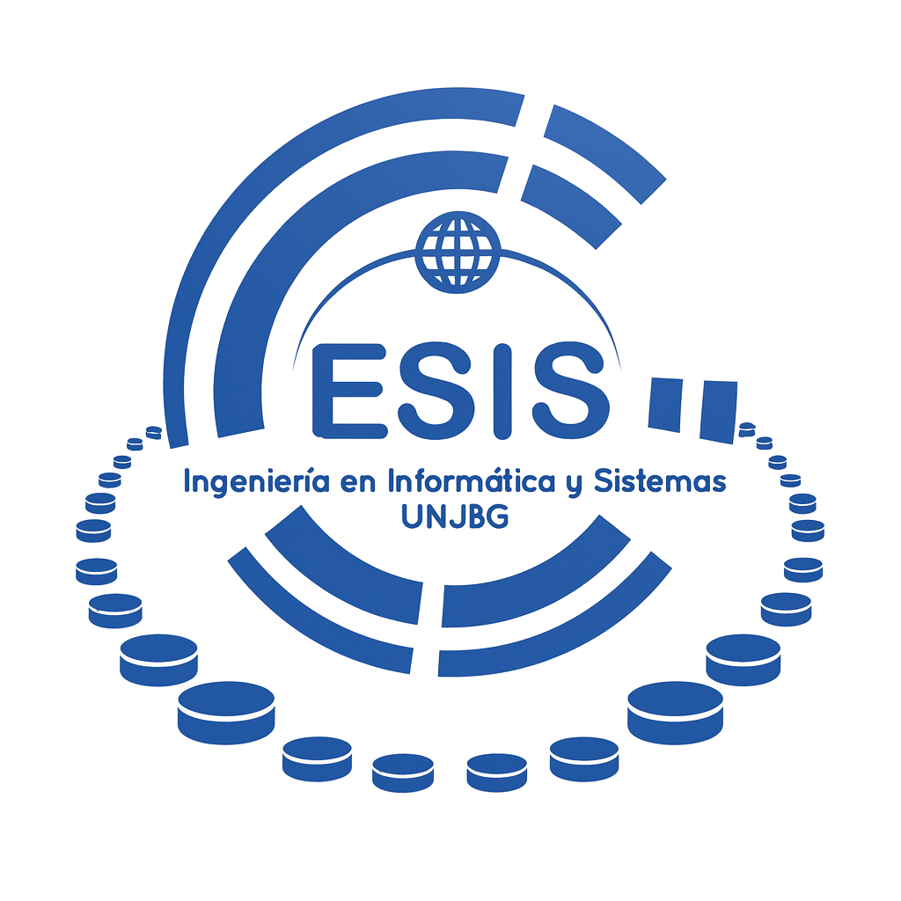
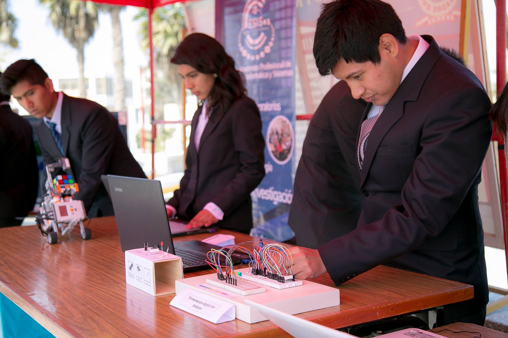

PERT – CPM
Duración del proyecto, ruta crítica, holguras y probabilidad de cumplir un plazo.
Abrir PERT–CPM →UNJBG · Informática y Sistemas
PERT–CPM, inventarios y decisiones. Seleccione un modelo para ingresar sus datos o resolver un ejercicio de las prácticas.

Escuela Profesional · Informática y Sistemas
Duración del proyecto, ruta crítica, holguras y probabilidad de cumplir un plazo.
Abrir PERT–CPM →
Universidad Nacional Jorge Basadre Grohmann
Investigación Operativa II · 2026
Docente: MSc. Manuel Yuri Apaza Valencia
Coordinación
Programación
Pruebas
Documentación
Supervisión